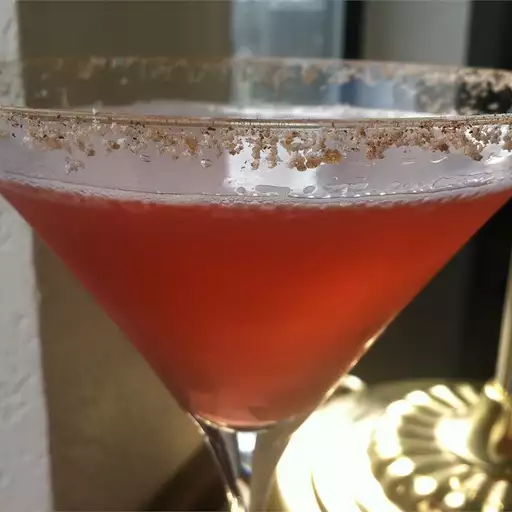

Appletini

Description
This fun, festive twist on a martini has the fresh flavors of apple and cranberry. Enjoy!
Ingredients
- 3 tablespoons white sugar
- 1 teaspoon ground cinnamon
- 1 fluid ounce vodka
- 1 fluid ounce sour apple schnapps
- 1 fluid ounce cranberry juice
- 1 slice apple
Steps
- Stir together the sugar and cinnamon in a small bowl.
- Rim a chilled martini glass in the cinnamon sugar mixture. Pour the vodka, schnapps, and cranberry juice into a cocktail shaker over ice.
- Cover, and shake until the outside of the shaker has frosted.
- Strain into the rimmed martini glass, and garnish with a slice of apple to serve.
Go to the Homepage